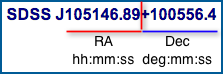

Quick Look - Main Window

Summary of data for: The Header on every Quick Look page tells you the official IAU (International Astronomical Union) designation for that object. The IAU is the internationally recognized authority for assigning names to celestial objects or features on celestial objects. Even if this object has other names or appears in other surveys, the designation at the top of the Quick Look page is your astronomical anchor for this object. The IAU designation begins with SDSS J followed by the right ascension (ra) and declination (dec) coordinates for the object in hours, minutes and seconds for ra and degrees, minutes and seconds for dec. The number for declination is preceded by a negative sign for objects south of the celestial equator and a plus sign for objects north of the equator. Return to Pre-flight Training - Sky Orientation for more help understanding position data.
Position Data (How do I find it?)
The information below this title is how SDSS identifies the object: The Object ID is unique to SDSS and is very useful for communicating about the object with others or retrieving information about the object in other parts of SkyServer; the ra and dec in this section are presented as single numbers in the forms of decimal degrees. This format is much easier for a computer to deal with than the traditional representation used by the IAU and most amateur astronomers.
Image Data
The image of the object is linked to Navigate where you can zoom in or scan around for a different view of the neighborhood. Below the image is the classification given to the object by the SDSS. Galaxy, Star and QSO (quasar) are the only descriptors you will see here.
Magnitudes
A brightness measurement in the form of a magnitude is calculated for each of the SDSS filters that were used to construct the image you see. See Pre-flight Training - Magnitude and Brightness for more information about these important measurements.
Caution
Scientists are always verifying the reliability of the data they use. Any condition that might cause uncertainty in the data is reported in the SDSS through a system of flags that are viewable through the Explore page.
Spectrum Data
Not all objects in the SDSS have spectra associated with them but when they do, there is a lot of information there to be explored. Two very important pieces of information are included below the graph; the classification of the object based upon the spectrum (specClass) and the measurement of the degree to which the spectrum has been displaced toward the red end of the spectrum (redshift). In general, redshift increases with increasing distance.
Interactive Spectrum
The SDSS has a scientific tool that you can learn to use too. To learn more, see the Interactive Spectrum Tour.
Get spectrum as CSV
All the individual points of data that go into creating the spectrum graph are available in a CSV (comma separated values) file format. CSV files can be opened directly into spreadsheet programs. From here all the tools of that program are available to you for creating your own graphs or analyzing the numeric data.